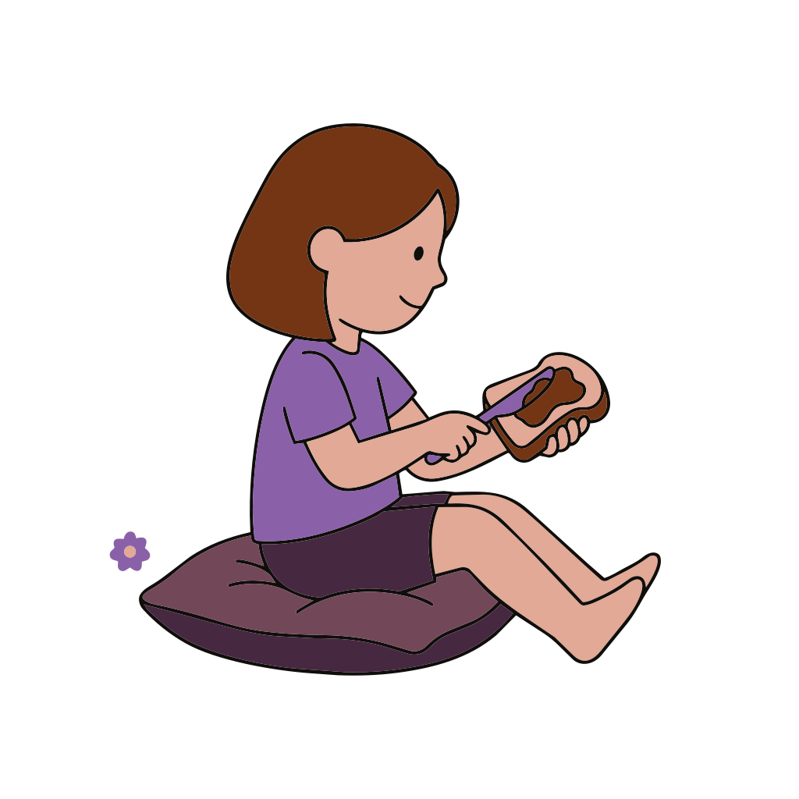
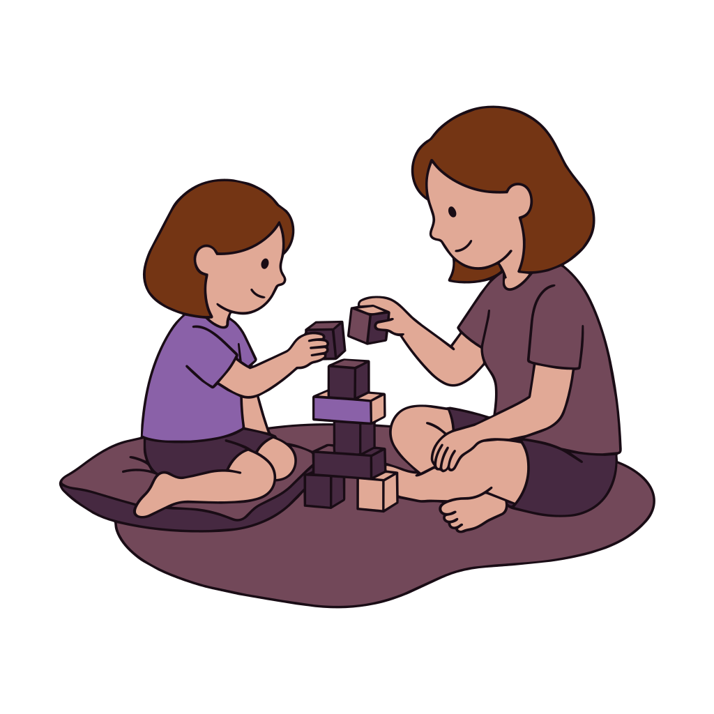
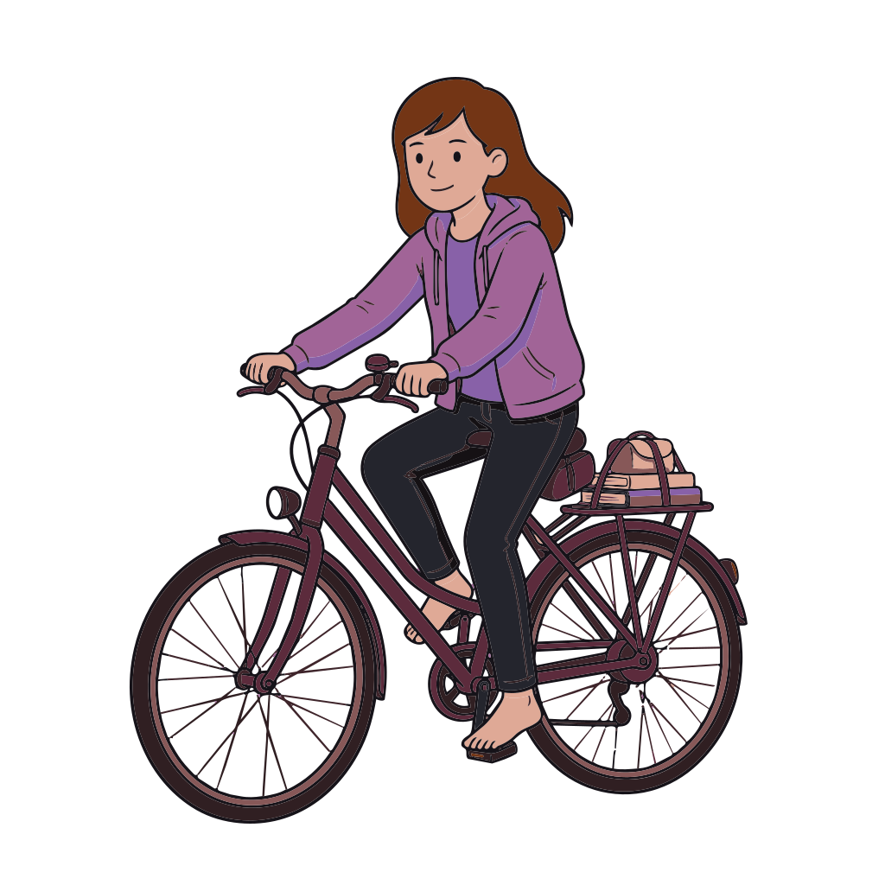
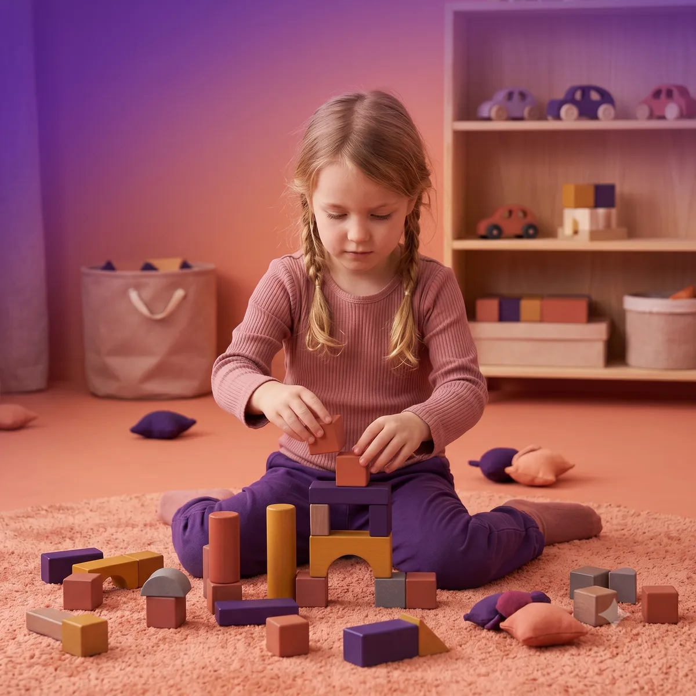
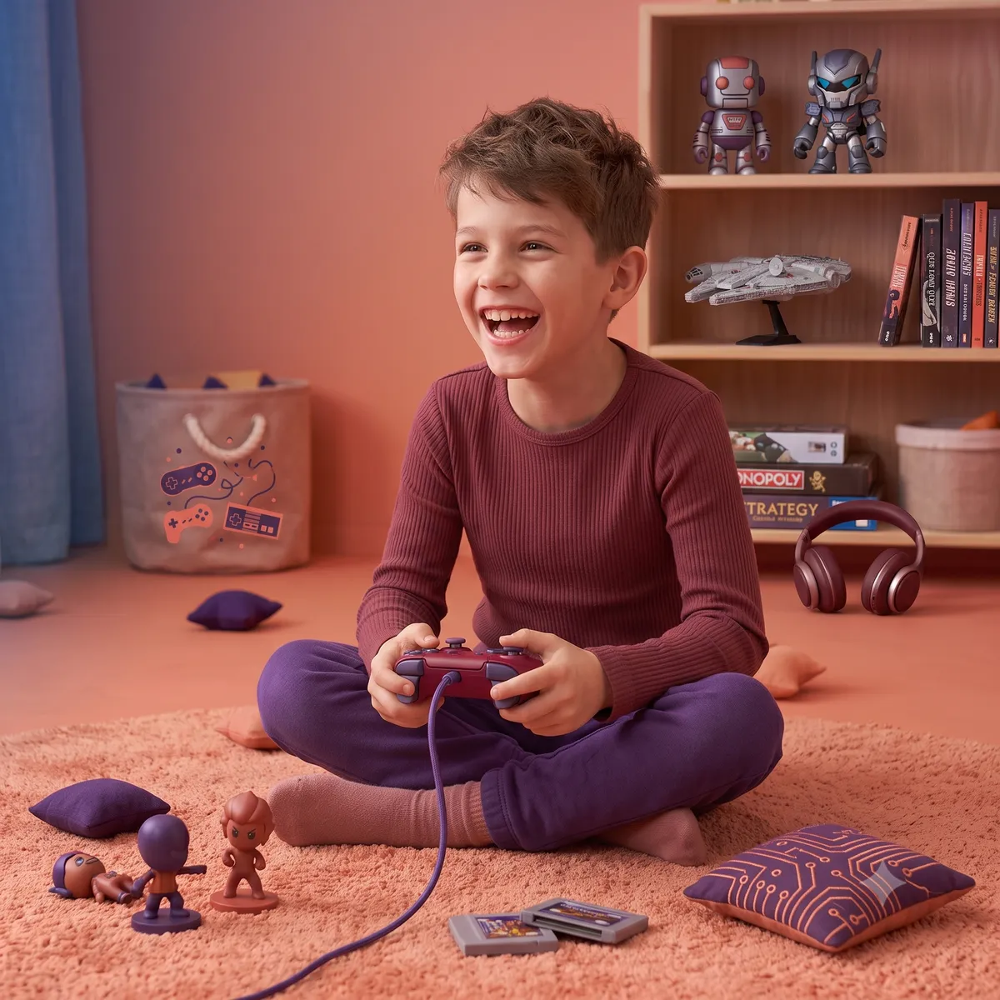
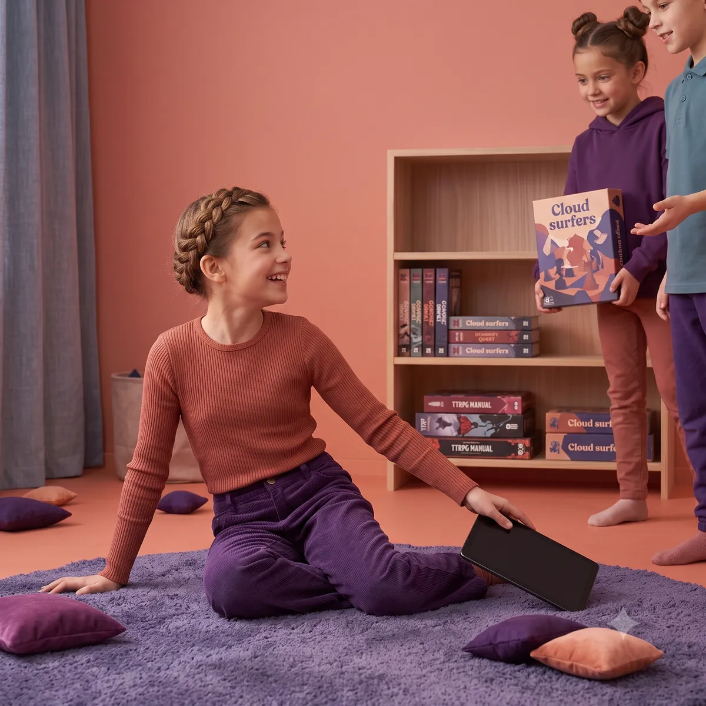
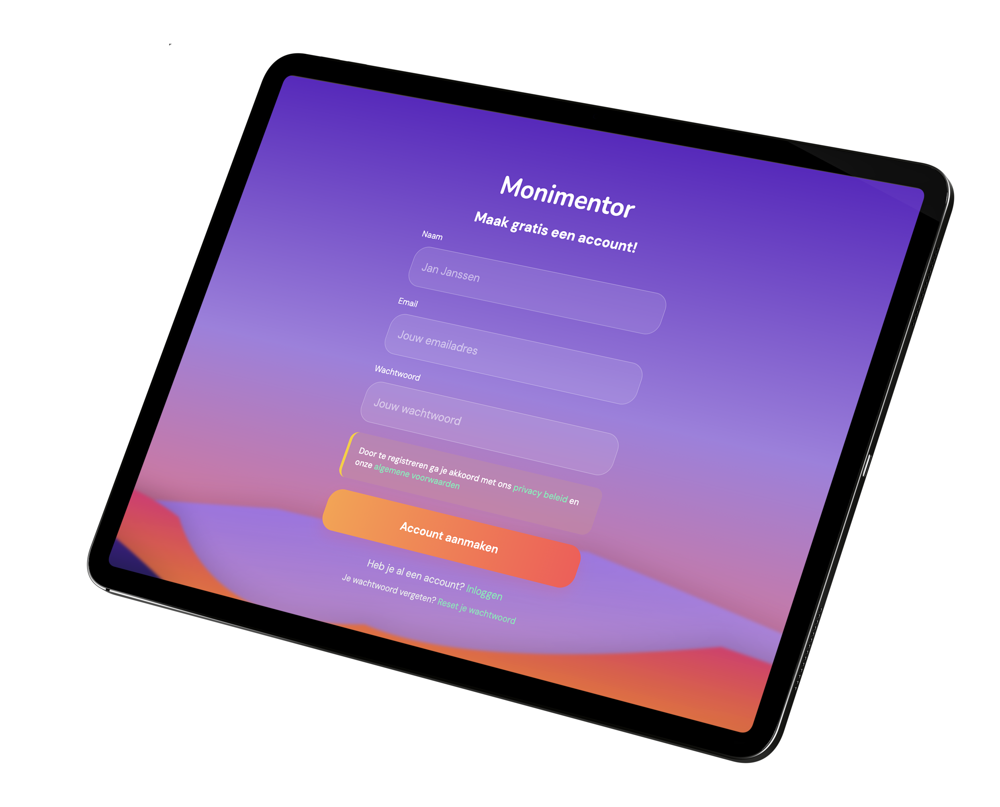

Waarom Monimentor
Met zachte grenzen naar zelf regulatie
Wij zien schermen als een trampoline voor nieuwsgierigheid. In plaats van harde schermtijd grenzen, reiken we kinderen de tools aan om zelfstandig te leren doseren. Digitale opvoeding wordt een proces van samen ontdekken.
Voor welke gezinnen
De perfecte tijd is nu

Vooral op vroege leeftijd (<7jaar) worden gewoontes gevormd — gezonde én ongezonde. Het ideale moment om te beginnen is vóórdat je kind een eigen telefoon krijgt. Gezonde gewoontes van meet af aan aanleren is veel makkelijker dan ongezonde gewoontes afleren in de pubertijd. Met Monimentor leg je de basis voor gezonde digitale tienerjaren.
Het Verschil
Van strijd naar samenwerking

Zelfstandigheid
Je kind leert zelf te stoppen, in plaats van dat jij het moet afnemen. Ze krijgen regie over hun eigen gedrag.

Gezinsverbinding
Kijk samen TV, speel samen games. Praat samen over wat ze zien. Samen sterk, niet tegen elkaar.

Voorbereid op de toekomst
Jong geleerd, oud gedaan. Nu de basis leggen voor de jaren dat je kind zijn eigen telefoon heeft.
Hoe het werkt
Hoe de Magie Werkt.
1. Digitale Energie.
Elke minuut schermtijd wordt omgezet in energieknikkers. Dit geeft kinderen visueel inzicht in hun digitale ritme, in plaats van een abstracte aflopende klok.
2. Spelenderwijs Leren.
Is de pot vol? Dan gaat het scherm niet op zwart. Je kind voelt zelf de grens. Gaan ze toch door? Dan gaat die energie af van het budget van morgen. Zo leren ze zelfregulatie.
3. Jouw Digitale Gids.
Moni spiegelt emoties. Als je kind te lang speelt, wordt Moni moe. Moni is de vrolijke tolk tussen de belevingswereld van je kind en jou als trotse ouder.
De Reis
We groeien mee met je kind.

De Verkenner (4-7 jaar)
De eerste stappen in de digitale jungle. Moni biedt strakke kaders voor veiligheid en directe begeleiding. Jij als ouder bent de gids.

De Navigator (8-10 jaar)
De coachende fase. Je kind leert zelf knikkers verdelen, voelt de consequenties van keuzes, en kan sparen voor offline privileges.

De Mentor (10-12+ jaar)
De vangnet-fase. Zelfregulatie is nu de standaard. Je kind beheert eigen eindtijden en Moni is een klankbord voor digitale geletterdheid voordat de eigen smartphone komt.
Vroege vogel
Maak een gratis account aan.
Monimentor is gratis help jij ons Monimentor elke dag een beetje beter maken. Jouw account wordt zo snel mogelijk beoordeeld en geactiveerd.

1. Maak een account & voeg gezinsleden toe
Maak je Monimentor account aan en voeg gezinsleden toe.